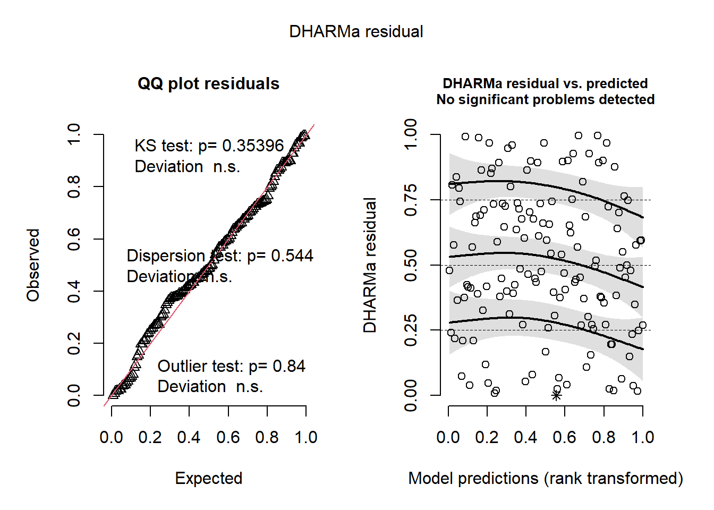
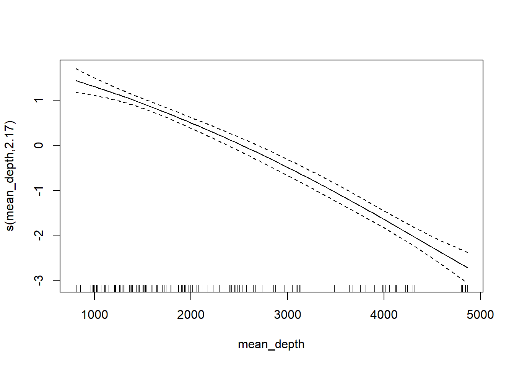
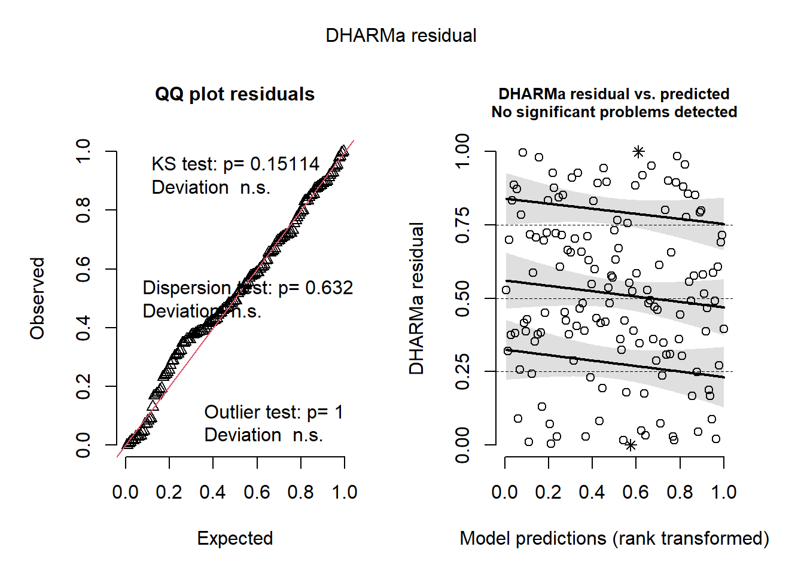
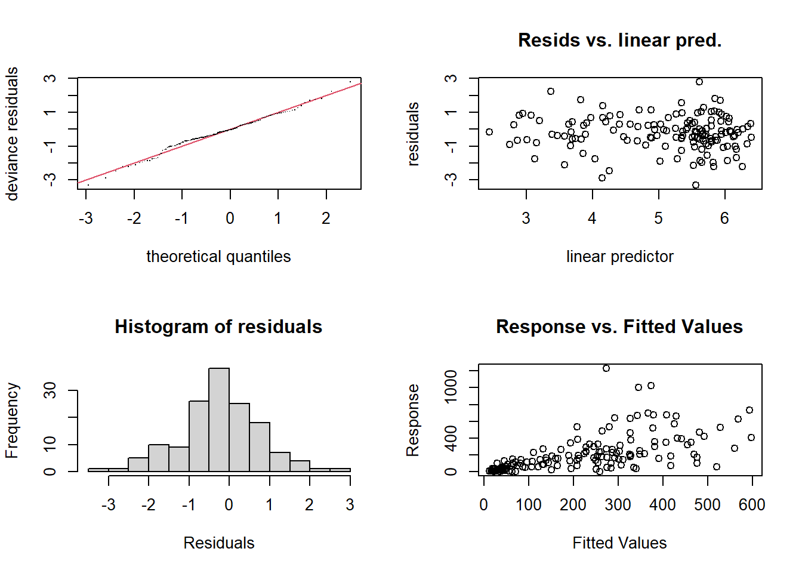
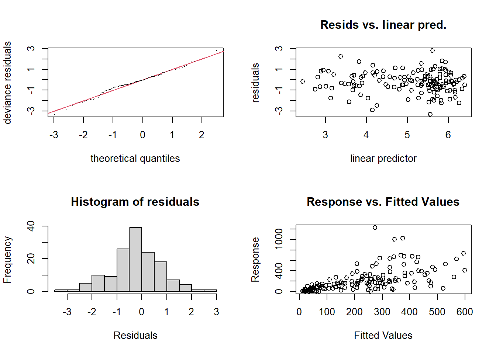
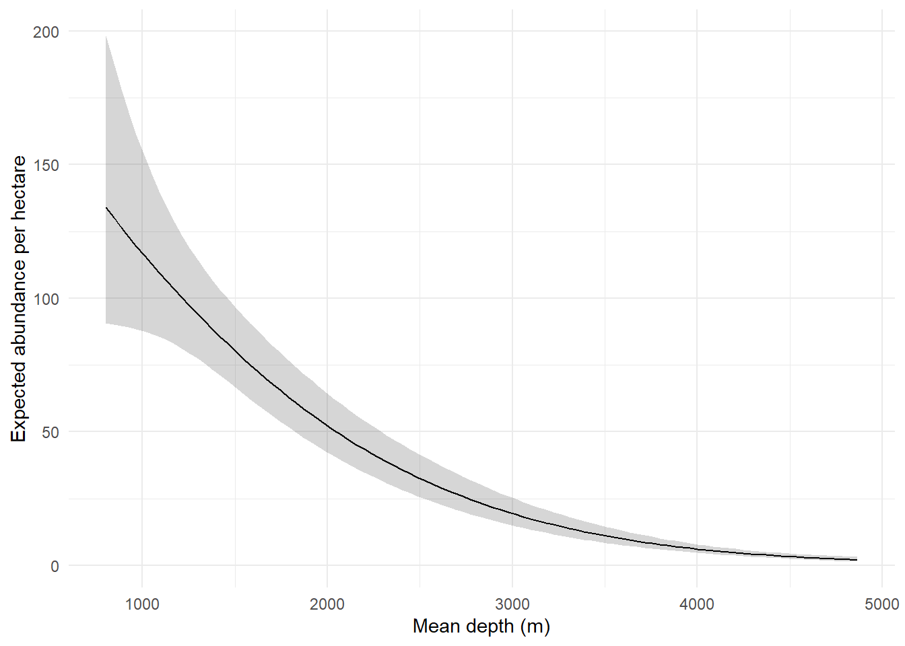

knitr::opts_chunk$set(echo = TRUE)29 Tutorial: GAMs and GAMMs
29.1 Introduction
In this tutorial, we introduce how to model different datasets using Generalized Additive Models (GAMs). We then add random effects, turning these into Generalized Additive Mixed Models (GAMMs).
You have already had the chance to work with GLMs and GLMMs. The response distribution, link function, offsets, and grouping structure apply to these (slightly more complicated) extensions of the GLM. The new idea is that selected continuous predictors can have smooth relationships on the link scale, rather than a constant slope (i.e. linear models). But, the cool thing is that a smooth can estimate a straight line too!
For this tutorial, we will proceed from a familiar count model to a GAM, a GAMM, and then models with different interaction structures. In the second example, we will examine seasonal rainfall using a cyclic smooth.
ImportantStart with the question, not a search through formulas (or using what others have done)
For a causal question determined by your DAG, you should first state the estimand and use your DAG to justify the adjustment set. In this example, we compare ways of representing those relationships(i.e. linear or nonlinear), rather than selecting adjustment variables by AIC or p-values. A flexible model like a GAM cannot repair an invalid (aka horrible) adjustment set. The before/after puffer-jackalope pelican comparison is a modeling example; it does not by itself identify the effect of introducing pelicans (as you can see if you actually look at the DAG).
NoteBefore you run the tutorial
Keep this file in the same course-project context as your original tutorial: the existing chapters/... data and script paths are the same. The two CSV files and the ‘load_packages.r’ script must be present and be able to be read. The examples require mgcv, DHARMa, ggplot2, dplyr, readr, and lubridate (same as in the packages script). In this tutorial, I opted to show the Warnings so that convergence and model-checking messages remain visible. I think these are very helpful when dealing with these models. So, run the tutorial section by section and do not ignore warnings.
29.2 Example #1: Building a basic GAM
For this example, we will revisit the familiar dataset: a population of Lepusantilocapra pufferi (puffer jackalope) monitored since the mid-1970s. You will need the following file (simply click to save):
As a reminder, the data include the following variables:
site: where the individuals were sampledabund: number of individuals detected at each locationdens: density of individuals (per square meter) at each sampling locationmean_depth: mean depth, in meters of the sampling locationyear: year of the studyperiod: 1=before and 2= after introduction of Pelicanus pufferivorus (puffer-jackalope pelican)x_km: longitude (decimal degrees) of sampling locationy_km: latitude (decimal degrees) of sampling locationswept_area: size in square meters of the sampling location (effort)
Though we examined the relationship between total Lepusantilocapra pufferi abundance and mean depth for each time period (before/after introduction of puffer-jackalope pelicans), we will now allow that relationship to be nonlinear. We will retain abundance (abund) as our response variable and account for variation in area searched using an offset. This lets us introduce smooth terms without changing the response at the same time.
29.3 Set up workspace
Note that you may already have this file. You can change how it loads to match your workflow.
source("chapters/class_r_scripts/load_packages.r")Registered S3 methods overwritten by 'MuMIn':
method from
nobs.multinom broom
nobs.fitdistr broomRegistered S3 method overwritten by 'mgcViz':
method from
+.gg ggplot2Warning: package 'ggplot2' was built under R version 4.4.3Warning: package 'tidygam' was built under R version 4.4.3Warning: package 'seewave' was built under R version 4.4.3This is DHARMa 0.5.0. For overview type '?DHARMa'. For recent changes, type news(package = 'DHARMa')
Note that the default setting in simulateResiduals was changed to conditional simulations since version 0.5.0. This is likely to change residual calculations for all hierarchical (in particular random effect) models. If you want to switch back to the old package version defaults, please use the argument simulateREs = "user-specified" in simulateResiduals(). For more details, see ?simulateREsiduals.Warning: package 'tuneR' was built under R version 4.4.3Warning: package 'ggeffects' was built under R version 4.4.3Warning: package 'GGally' was built under R version 4.4.3Warning: package 'MuMIn' was built under R version 4.4.3
Attaching package: 'insight'The following object is masked from 'package:MuMIn':
get_callWarning: package 'glmmTMB' was built under R version 4.4.3Warning: package 'rio' was built under R version 4.4.3
Attaching package: 'rio'The following object is masked from 'package:seewave':
export
Attaching package: 'tidyr'The following objects are masked from 'package:Matrix':
expand, pack, unpackWarning: package 'reshape2' was built under R version 4.4.3
Attaching package: 'reshape2'The following object is masked from 'package:tidyr':
smiths
Attaching package: 'lubridate'The following object is masked from 'package:seewave':
durationThe following objects are masked from 'package:base':
date, intersect, setdiff, union
Attaching package: 'psych'The following object is masked from 'package:seewave':
rescaleThe following objects are masked from 'package:ggplot2':
%+%, alphaWarning: package 'fields' was built under R version 4.4.3Loading required package: spamWarning: package 'spam' was built under R version 4.4.3Spam version 2.11-3 (2026-01-05) is loaded.
Type 'help( Spam)' or 'demo( spam)' for a short introduction
and overview of this package.
Help for individual functions is also obtained by adding the
suffix '.spam' to the function name, e.g. 'help( chol.spam)'.
Attaching package: 'spam'The following object is masked from 'package:Matrix':
detThe following object is masked from 'package:insight':
displayThe following objects are masked from 'package:base':
backsolve, forwardsolveLoading required package: viridisLiteLoading required package: RColorBrewer
Try help(fields) to get started.
Attaching package: 'fields'The following object is masked from 'package:psych':
describeWarning: package 'mgcv' was built under R version 4.4.3Loading required package: nlme
Attaching package: 'nlme'The following object is masked from 'package:DHARMa':
getDataThis is mgcv 1.9-4. For overview type '?mgcv'.
Attaching package: 'readr'The following object is masked from 'package:seewave':
specWarning: package 'dplyr' was built under R version 4.4.3
Attaching package: 'dplyr'The following object is masked from 'package:MASS':
selectThe following object is masked from 'package:nlme':
collapseThe following objects are masked from 'package:stats':
filter, lagThe following objects are masked from 'package:base':
intersect, setdiff, setequal, unionWarning: package 'purrr' was built under R version 4.4.3── Attaching core tidyverse packages ──────────────────────── tidyverse 2.0.0 ──
✔ forcats 1.0.0 ✔ tibble 3.2.1
✔ purrr 1.2.2 ── Conflicts ────────────────────────────────────────── tidyverse_conflicts() ──
✖ psych::%+%() masks ggplot2::%+%()
✖ psych::alpha() masks ggplot2::alpha()
✖ dplyr::collapse() masks nlme::collapse()
✖ lubridate::duration() masks seewave::duration()
✖ tidyr::expand() masks Matrix::expand()
✖ dplyr::filter() masks stats::filter()
✖ dplyr::lag() masks stats::lag()
✖ tidyr::pack() masks Matrix::pack()
✖ dplyr::select() masks MASS::select()
✖ readr::spec() masks seewave::spec()
✖ tidyr::unpack() masks Matrix::unpack()
ℹ Use the conflicted package (<http://conflicted.r-lib.org/>) to force all conflicts to become errorsWarning: package 'usdm' was built under R version 4.4.3Loading required package: terraWarning: package 'terra' was built under R version 4.4.3terra 1.9.11
Attaching package: 'terra'
The following object is masked from 'package:MASS':
area
The following object is masked from 'package:fields':
describe
The following objects are masked from 'package:psych':
describe, distance, rescale
The following object is masked from 'package:tidyr':
extract
The following object is masked from 'package:GGally':
wrap
The following objects are masked from 'package:seewave':
rescale, unwrap
Attaching package: 'usdm'
The following object is masked from 'package:nlme':
VariogramWarning: package 'mgcViz' was built under R version 4.4.3Loading required package: qgamWarning: package 'qgam' was built under R version 4.4.3
Attaching package: 'mgcViz'
The following object is masked from 'package:terra':
zoom
The following objects are masked from 'package:stats':
qqline, qqnorm, qqplotThen read in the dataset that we have worked with before.
# Import data
pufferi <- read_csv("chapters/class_exercise_data/lepusantilocapra_pufferi_abundance.csv")Rows: 146 Columns: 9
── Column specification ────────────────────────────────────────────────────────
Delimiter: ","
dbl (9): site, abund, dens, mean_depth, year, period, x_km, y_km, swept_area
ℹ Use `spec()` to retrieve the full column specification for this data.
ℹ Specify the column types or set `show_col_types = FALSE` to quiet this message.# Select necessary columns and prepare data
pufferi <- pufferi |>
select(abund, mean_depth, year, period, swept_area, site) |>
drop_na() |>
mutate(
site = factor(site),
period = factor(period, levels = c(1, 2),
labels = c("before", "after"))
)
# Check that the data meet model requirements. I think this is a nice wy to check.
stopifnot(
all(!is.na(pufferi$period)),
all(pufferi$swept_area > 0)
)Centering year makes the intercept and period contrast refer to the average study year. If the before and after periods do not overlap in time, interpreting that contrast requires extrapolation and assumptions about the temporal trend.
29.4 A GLM of jackalope abundance
As you have already seen with GLMs and GLMMs, we specify a response distribution, a link function, and a linear predictor. Here, we use a negative binomial count model with a log link and an area offset. Use the family supported by your preceding count analysis; the negative binomial is appropriate when its mean–variance relationship describes the data adequately.
mod_linear <- mgcv::gam(
abund ~ mean_depth + year + period + offset(log(swept_area)),
family = mgcv::nb(link = "log"),
method = "REML",
data = pufferi
)Although we fitted this model using mgcv::gam(), it has no smooth terms: its predictor has the same form as a GLM. The offset assumes expected counts are proportional to area searched, conditional on the other terms in the model.
Let us go ahead and simulate the residuals of this model using the DHARMa package (our usual approach). (Note: An error may be thrown about package “mgcviz” not being present; this needs to be resolved.)
set.seed(123)
res_linear <- DHARMa::simulateResiduals(mod_linear)
plot(res_linear)Warning in newton(lsp = lsp, X = G$X, y = G$y, Eb = G$Eb, UrS = G$UrS, L = G$L,
: Fitting terminated with step failure - check results carefully
Examine residual structure as a function of the other covariates too. Convergence alone does not establish that a model describes the data adequately.
29.5 Fitting a GAM
There is very little to change! We are going to add a smoother, s(), with a cubic regression spline basis, to our continuous variable mean_depth and then refit the model. The response, link, offset, and other predictors remain the same.
mod_gam <- mgcv::gam(
abund ~ s(mean_depth, bs = "cr", k = 10) +
year + period + offset(log(swept_area)),
family = mgcv::nb(link = "log"),
method = "REML",
data = pufferi
)
TipWhat is the default basis function used by the
s() smoother?
The default is a thin plate regression spline (bs = "tp"). This basis does not require choosing a conventional set of knot locations. Here, bs = "cr" specifies a cubic regression spline, whose basis uses a modest set of knots spread through the covariate values. Both approaches use a penalty to control wiggliness.
Summarize this model!
summary(mod_gam)
Family: Negative Binomial(1.965)
Link function: log
Formula:
abund ~ s(mean_depth, bs = "cr", k = 10) + year + period + offset(log(swept_area))
Parametric coefficients:
Estimate Std. Error z value Pr(>|z|)
(Intercept) -124.84349 70.84242 -1.762 0.0780 .
year 0.06012 0.03577 1.681 0.0928 .
periodafter -1.66703 0.74547 -2.236 0.0253 *
---
Signif. codes: 0 '***' 0.001 '**' 0.01 '*' 0.05 '.' 0.1 ' ' 1
Approximate significance of smooth terms:
edf Ref.df Chi.sq p-value
s(mean_depth) 2.169 2.685 411.2 <2e-16 ***
---
Signif. codes: 0 '***' 0.001 '**' 0.01 '*' 0.05 '.' 0.1 ' ' 1
R-sq.(adj) = 0.329 Deviance explained = 67.1%
-REML = 876.76 Scale est. = 1 n = 146This output looks a bit different. You now have two components: the parametric coefficients and the smooth terms. The former are interpreted as in your GLMs and GLMMs, including the link scale and interaction structure. The bottom section (“Approximate significance of smooth terms”) includes the estimated effective degrees of freedom (EDF) and an approximate test against a zero smooth contribution.
An EDF close to 1 indicates an approximately linear relationship on the link scale. Larger EDF values indicate more complex fitted shapes. The p-value does not measure effect magnitude and is not, by itself, a test of nonlinearity. Examine the curve and its uncertainty.
plot(mod_gam, shade = TRUE)
set.seed(123)
res_gam <- DHARMa::simulateResiduals(mod_gam)
plot(res_gam)
mgcv::gam.check(mod_gam)
Method: REML Optimizer: outer newton
full convergence after 5 iterations.
Gradient range [-5.096447e-05,0.0001397355]
(score 876.7631 & scale 1).
Hessian positive definite, eigenvalue range [0.3594808,76.57031].
Model rank = 12 / 12
Basis dimension (k) checking results. Low p-value (k-index<1) may
indicate that k is too low, especially if edf is close to k'.
k' edf k-index p-value
s(mean_depth) 9.00 2.17 0.98 0.53The smooth plot shows a centered contribution to the linear predictor, on the log scale. It does not show predicted abundance directly.
29.5.1 Reading the summary without confusing a relationship with curvature
| Output | How to read it |
|---|---|
| Parametric coefficient | A coefficient on the link scale, conditional on other terms; interactions change its interpretation. With a log link, exponentiating a simple coefficient gives a multiplicative mean ratio. |
EDF for an ordinary s(x) |
EDF near 1 means approximately linear on the link scale. Larger EDF indicates a more complex fitted shape; EDF is not a polynomial degree or a count of turning points. |
| Smooth-term p-value | An approximate test that the entire smooth contribution is zero, conditional on other terms. A strong straight-line relationship can have a tiny p-value. This is not a dedicated test of nonlinearity. |
| EDF = 5.1 and a small p-value | The fitted relationship uses curvature, and the overall relationship is supported. The p-value does not isolate the curved component. |
| Ref.df | A reference degrees-of-freedom quantity used in the approximate test; it is not the basis dimension k. |
| Deviance explained | Fit relative to an intercept-only model. It is not causal explanatory power or, generally, a percentage of variance explained. |
The usual smooth plot shows the centered smooth contribution. A confidence band excluding zero somewhere is not a test against a straight line. The EDF-near-1 rule applies to ordinary one-variable, noncyclic smooths, not to random-effect terms, cyclic curves, or multidimensional interactions. Also, a straight line on a log or logit scale can already produce a curved response-scale relationship.
We will use ordinary smooths throughout this tutorial. There is no need here to split predictors into separate linear and nonlinear components.
29.5.2 What about basis dimension (k) and the risk of overfitting?
The basis dimension k limits how complex a smooth can become. It is not generally the number of knots, and it is not the fitted curve’s degrees of freedom. The smoothing penalty, estimated here using REML, determines how much of the available complexity is used. Increasing k allows a more complex curve but does not require one.
Start with a reasonable basis dimension and check its adequacy using gam.check(). A low k-index and small associated p-value can flag remaining structure, especially when the EDF is close to its available upper limit. These are diagnostic clues, not automatic instructions: residual dependence or other misspecification can also produce problems. If warranted, refit with a larger k and check whether predictions and conclusions change. There must be enough unique predictor values to support the basis dimension.
For a quick sensitivity check:
mod_gam_larger <- mgcv::gam(
abund ~ s(mean_depth, bs = "cr", k = 20) +
year + period + offset(log(swept_area)),
family = mgcv::nb(link = "log"),
method = "REML",
data = pufferi
)
mgcv::gam.check(mod_gam_larger)
Method: REML Optimizer: outer newton
full convergence after 6 iterations.
Gradient range [-6.67269e-09,1.691404e-08]
(score 876.47 & scale 1).
Hessian positive definite, eigenvalue range [0.3650532,76.5719].
Model rank = 22 / 22
Basis dimension (k) checking results. Low p-value (k-index<1) may
indicate that k is too low, especially if edf is close to k'.
k' edf k-index p-value
s(mean_depth) 19.00 2.17 0.98 0.68For the sake of a quick comparison, we can examine the AICs of the linear and smooth representations. Question: Why is it valid to use AICs here (given your knowledge about causal inference)? Fit both candidates using ML for this comparison, and use the same observations, family, link, offset, and other terms:
mod_linear_ml <- update(mod_linear, method = "ML")
mod_gam_ml <- update(mod_gam, method = "ML")
stopifnot(nobs(mod_linear_ml) == nobs(mod_gam_ml))
AIC(mod_linear_ml, mod_gam_ml) df AIC
mod_linear_ml 5.000000 1753.292
mod_gam_ml 6.689084 1751.643As a reminder, lower AIC indicates better relative support after accounting for complexity, among the candidates considered. It does not establish that a model is correct, or that that modeled effect as causally identified. Inspect the curve and diagnostics, and compare the same estimand under both linear and nonlinear representations. We use ML consistently for candidate comparisons; do not compare REML scores across different fixed-effect structures. REML is useful for the final fit once a structure is chosen.
Here, please note that the phrase without a smooth means retaining mean_depth as a linear term, not dropping depth from the adjustment set. Otherwise, the DAG would be very angry with us. We check k for adequacy rather than finding an allegedly optimal k through a large AIC search.
29.5.3 Predictions on the response scale
We will get to predictions later. For not, let us see the fitted depth relationship in abundance units. We predict for a fixed area of 10,000 square meters (one hectare), in the before period and at that period’s average year. Restricting depth to the observed range in this period reduces extrapolation, though combinations of depth and year should also be checked for support.
before <- subset(pufferi, period == "before")
pred_depth <- data.frame(
mean_depth = seq(min(before$mean_depth, na.rm = TRUE),
max(before$mean_depth, na.rm = TRUE), length.out = 100),
year = mean(before$year, na.rm = TRUE),
period = factor("before", levels = levels(pufferi$period)),
swept_area = 10000
)
pr <- predict(mod_gam, newdata = pred_depth, type = "link",
se.fit = TRUE, unconditional = TRUE)
pred_depth$estimate <- exp(pr$fit)
pred_depth$lower <- exp(pr$fit - 1.96 * pr$se.fit)
pred_depth$upper <- exp(pr$fit + 1.96 * pr$se.fit)
ggplot(pred_depth, aes(mean_depth, estimate)) +
geom_ribbon(aes(ymin = lower, ymax = upper), alpha = 0.2) +
geom_line() +
labs(x = "Mean depth (m)", y = "Expected abundance per hectare") +
theme_minimal()
These are approximate pointwise confidence intervals for the conditional mean, not prediction intervals for new counts. With a nonlinear smooth, a single exponentiated coefficient no longer describes the depth relationship across its entire range.
29.5.4 Hints for choosing k: adequate flexibility, not an optimal knot count
| Hint | What to do |
|---|---|
| Start modestly | For a simple one-variable relationship, k = 10 is a useful starting illustration, not a universal recommendation. More complicated relationships may need more capacity. |
| Count unique values | k must be supported by distinct predictor values. A variable with only a few levels may belong as a factor or a simple trend rather than a large smooth. Check within groups for factor-by smooths. |
| Distinguish capacity from use | k supplies capacity; estimated penalization controls the fitted wiggliness. Larger k does not force more bends. |
| Check EDF and the k-index | EDF near its allowable ceiling together with a low k-index/small check p-value suggests a basis worth enlarging. The ceiling depends on basis and constraints, often k - 1 for a simple centered smooth. |
| Refit and compare | Increase the suspect k, often by doubling it, and inspect changes in shape, diagnostics, uncertainty, and your estimand. A modest EDF increase alone need not be scientifically important. |
| Investigate other causes | Residual autocorrelation, the wrong family, missing interactions, or concurvity can also create diagnostic problems. Increasing k is not a universal fix. |
| Recognize exceptions | A k-index may be unavailable for factor and random-effect terms. Do not interpret those missing checks as failures. |
| Keep uncertainty visible | Sparse regions and boundaries can remain poorly estimated even with a large basis. Avoid extrapolation and treat apparent thresholds cautiously. |
29.5.5 Choosing a smoother: match the structure of the variable
| Situation | Starting specification | Why? |
|---|---|---|
| One ordinary continuous predictor | s(x) or s(x, bs = "tp") |
Thin plate regression spline; a useful general starting point without manually selecting conventional knot locations. |
| One continuous predictor, simple efficient alternative | s(x, bs = "cr") |
Cubic regression spline; suitable for many ordinary one-variable relationships. |
| A cycle such as day of year or angle | s(day, bs = "cc") |
Cyclic cubic spline joins both ends smoothly; explicitly define the complete cycle boundaries. A nonconstant cyclic curve cannot be globally straight. |
| Continuous predictors with different units/scales | s(x) + s(z) + ti(x, z) |
Tensor interaction permits separate marginal bases and penalties. |
| One joint surface, without separately decomposing main effects | te(x, z) |
Tensor surface includes lower-order structure; do not casually combine it with overlapping main-effect smooths. |
| Spatial coordinates in comparable distance units | s(easting, northing) |
An isotropic thin plate surface can be useful when that spatial assumption is appropriate. Project longitude/latitude to suitable distance coordinates first. |
| A curve for each categorical group | group + s(x, by = group) |
Group-specific centered smooths plus group-level differences; use a factor. |
| Random group intercepts | s(group, bs = "re") |
Group deviations, not a curved relationship in group labels. |
| Many group-specific nonlinear trajectories (advanced) | s(time, group, bs = "fs") |
Penalized group curves; require adequate repeated observations and careful specification of shared versus group structure. |
Choose a defensible basis from the variable’s structure, then check adequacy. Do not search every basis by AIC. For ordinary one-variable relationships, adequate bases often give similar conclusions. A smooth does not automatically include interactions with other variables.
29.6 From a GAM to a GAMM: adding site effects
Now, let us add complexity to our model. Repeated observations within the same site may share conditions that are not represented by the measured predictors. Your GLMM experience carries over: a random intercept can represent site-level differences in the expected response.
mod_gamm <- mgcv::gam(
abund ~ s(mean_depth, bs = "cr", k = 10) +
year + period + offset(log(swept_area)) +
s(site, bs = "re"),
family = mgcv::nb(link = "log"),
method = "REML",
data = pufferi
)
summary(mod_gamm)
Family: Negative Binomial(1.966)
Link function: log
Formula:
abund ~ s(mean_depth, bs = "cr", k = 10) + year + period + offset(log(swept_area)) +
s(site, bs = "re")
Parametric coefficients:
Estimate Std. Error z value Pr(>|z|)
(Intercept) -124.83933 70.84321 -1.762 0.0780 .
year 0.06012 0.03577 1.681 0.0928 .
periodafter -1.66702 0.74548 -2.236 0.0253 *
---
Signif. codes: 0 '***' 0.001 '**' 0.01 '*' 0.05 '.' 0.1 ' ' 1
Approximate significance of smooth terms:
edf Ref.df Chi.sq p-value
s(mean_depth) 2.16879 2.685 411.177 <2e-16 ***
s(site) 0.01583 142.000 0.015 0.544
---
Signif. codes: 0 '***' 0.001 '**' 0.01 '*' 0.05 '.' 0.1 ' ' 1
R-sq.(adj) = 0.329 Deviance explained = 67.1%
-REML = 876.76 Scale est. = 1 n = 146mgcv::gam.vcomp(mod_gamm)
Standard deviations and 0.95 confidence intervals:
std.dev lower upper
s(mean_depth) 9.125076e-06 1.782391e-06 4.671646e-05
s(site) 7.641815e-03 2.406085e-60 2.427068e+55
Rank: 2/2
All smooth components:
[1] 9.125076e-06 7.641815e-03